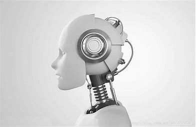
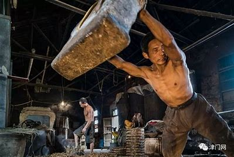

工业时代
机器延展人的体力，却也把工人推向更高强度、更细碎的被支配劳动。
以“从人是机器到机器是人”为线索，讨论机器、资本、劳动与主体性的重新排列。

原 PPT 的核心判断很明确：机器不仅改变生产效率，也不断改变“人如何被定义”。
机器延展人的体力，却也把工人推向更高强度、更细碎的被支配劳动。
算法和数据系统延展人的决策能力，同时又放大了依赖、沉溺和被计算。
技术不是中性的背景，它总是嵌在资本、制度和社会关系之中。
不是简单赞成或反对 AI，而是分析 AI 在何种结构中塑造主体。

工业机器极大提高了生产力，但在资本主义条件下，工人也更容易沦为机器的附属物。
原始素材把人工智能依赖、数据剥削、注意力控制放在同一条线上，这正适合 T4 的概念推进写法。
人们逐渐把基础判断、信息整理和表达工作外包给智能系统。
平台通过数据不断描摹用户画像，劳动与消费同时被再组织。
看似个性化推荐，实际让人更容易落入既定轨道。
劳动不只发生在工厂，也发生在注意力、点击与数据生产之中。
人工智能时代的问题，不是机器像不像人，而是人会不会越来越按照机器和平台的逻辑被组织。
基于原 PPT 的主旨重写
如果要把课堂表达压得更稳，就把论证骨架收束成四个术语，再把材料往里填。
劳动者与劳动成果、劳动过程和自身本质发生疏离。
技术的使用方向取决于谁掌握资源、规则和分配权。
数据、点击、内容生产与平台互动本身也构成价值生成。
真正需要追问的，是人在技术系统中还能否保持判断、创造与协同能力。
“理解人工智能，不只是理解技术对象，更是理解人在技术、资本与社会结构中的位置。”
素材来源：马原讨论《人工智能》PPT 内容重组